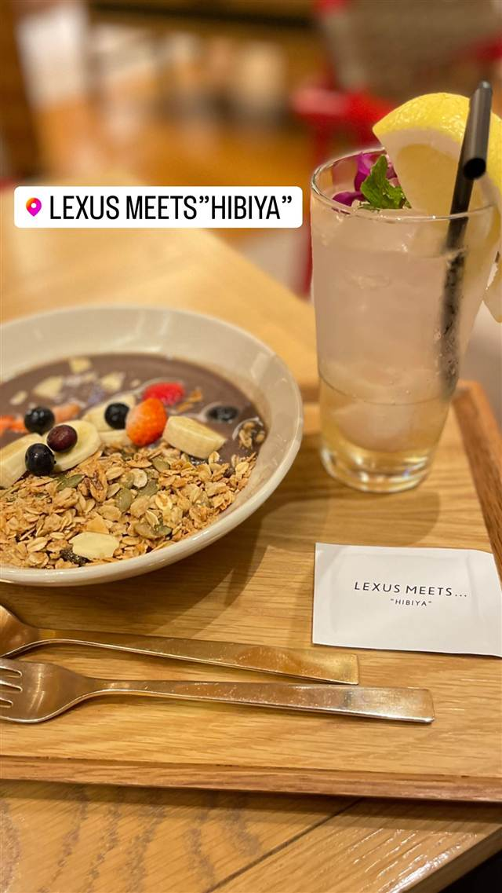
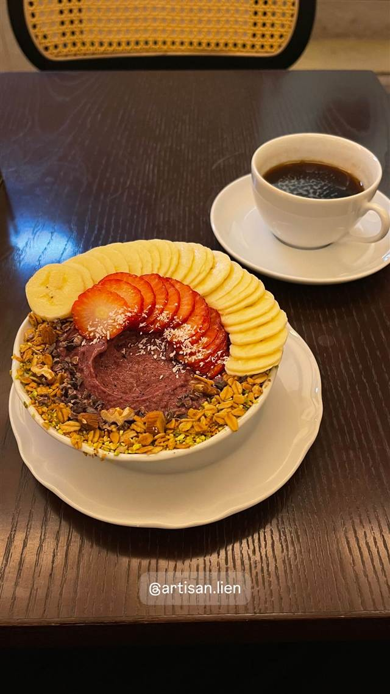
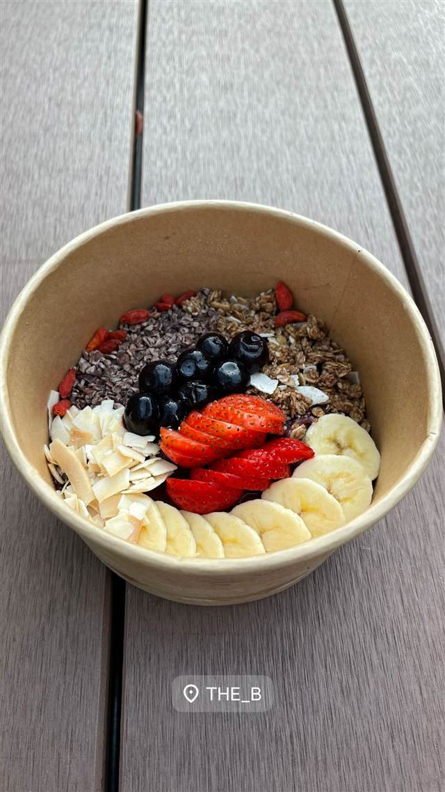
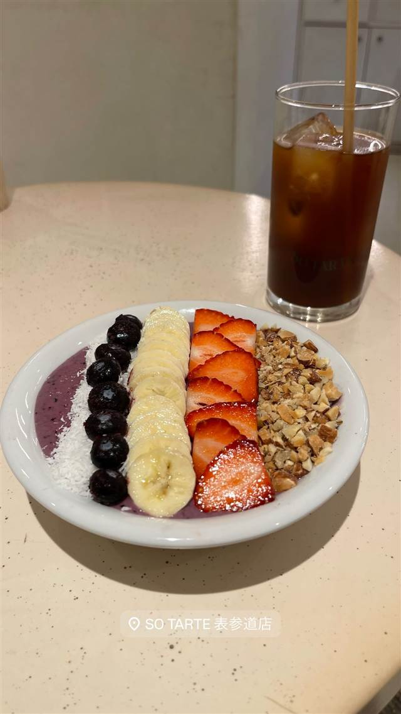
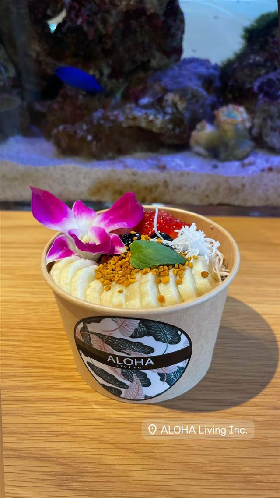

Hale'iwa Bowls
スピルリナ入りで鮮やかな青緑色のブルーマジックボウル
Hale'iwa Bowls
2010年頃創業、ノースショア・ハレイワ発祥のアサイーボウル専門店の草分け的存在。無添加・オーガニック食材にこだわり、スピルリナ入りの鮮やかな「ブルーマジックボウル」などで知られる。
TRIVIA
豆知識
- 看板の「ブルーマジックボウル」はスピルリナ入りで鮮やかな青緑色
- わらぶき屋根の小さなスタンドがノースショアの目印になっている
REVIEWS
世間の評判
4.7Googleマップ
フレッシュな具材とボリューム満点さ
- 新鮮なフルーツとグラノーラのボリュームを評価する声が数多くある
- 行列ができても提供が早く待ち時間は短く済むという声が複数ある
- 駐車場が分かりにくいうえに混雑時は停める場所を探すのに苦労するという声がある
Tripadvisor・Yelp 口コミ1188件
| 創業 | 2010年頃創業 |
|---|---|
| 看板 | アサイーボウル（スピルリナ入りの「ブルーマジックボウル」など） |
| こだわり | 無添加・無精製糖、毎日仕入れる新鮮でオーガニックな食材にこだわる |
| どこから | 海外 |
| 行くなら | 行列 |
| 場所 | 66-030 Kamehameha Hwy, Haleiwa, HI 96712 |
| メモ | ハレイワ中心部、わらぶき屋根が目印のスタンド。専用駐車場あり |
食べたもの：アサイーボウル
NEARBY
近い店・同じ系統の店
-

アサイー 日比谷 LEXUS MEETS..."HIBIYA" 五街道をあんの色と味で表現した日比谷五街道団子 昼 ¥1,000～¥1,999 夜 ¥2,000～¥2,999 -

アサイー 白金高輪駅 ARTISAN LIEN(アルティザンリアン) 作りたてが命でスフレは焼き立て60秒が勝負とされる 昼 ¥1,000～¥1,999 夜 ¥1,000～¥1,999 -
 アサイー 江ノ電七里ヶ浜駅
Pacific DRIVE-IN
国道134号沿いで江ノ島や富士山まで見渡せる海辺のテラス
昼 ¥1,000～¥1,999 夜 ¥1,000～¥1,999
アサイー 江ノ電七里ヶ浜駅
Pacific DRIVE-IN
国道134号沿いで江ノ島や富士山まで見渡せる海辺のテラス
昼 ¥1,000～¥1,999 夜 ¥1,000～¥1,999
-

アサイー 表参道 THE_B 毎朝整理券が配られるほど行列必至のアサイーボウル 昼 ¥1,000～¥1,999 夜 ¥1,000～¥1,999 -

アサイー 表参道駅 SO TARTE 表参道店（ソータルト） 卵・乳・小麦不使用、米粉のグルテンフリータルトとアサイー 昼 ¥1,000～¥1,999 -

アサイー 武蔵小山駅 ALOHA LIVING Inc. アサイーボウルに珍しいビーポーレンをトッピング 昼 ¥1,000～¥1,999 夜 ¥1,000～¥1,999